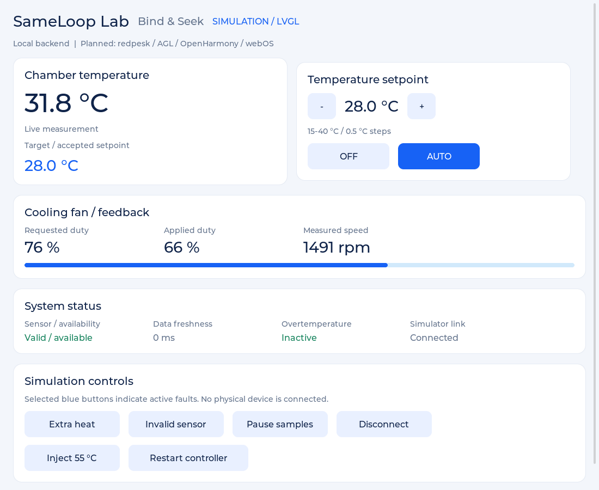

E02 — LVGL 0.1.0
Origine : VALIDATION.md livré avec sameloop-ui-lvgl, daté du 24 octobre 2026.
Rapport de build Linux x86_64, GCC/G++ 13.3, LVGL 9.2.2 et SDL2 2.30.0.
Tests CTest du modèle et de l'UI en pilote SDL dummy rapportés réussis.
Une capture réellement produite par LVGL a été inspectée lors de cette livraison.

Limites : pas de session interactive Fedora, pas de validation souris/clavier système, pas de carte/écran embarqué et aucun backend connecté. Les tests de widget injectent des événements LVGL ; ce n'est pas un test du système de fenêtrage.